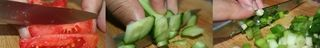
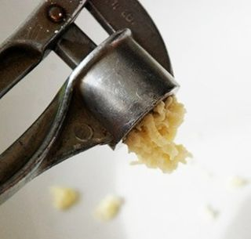
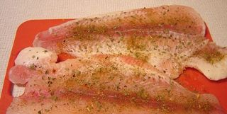
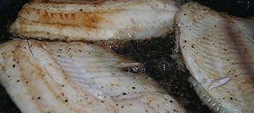
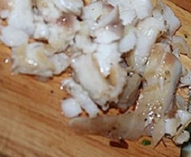
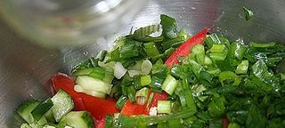

Шаг 1: Подготавливаем ингредиенты.
Займёмся овощами и зеленью - их нужно промыть проточной холодной водой и обсушить бумажными полотенцами. Чтобы обсушить зелень, встряхните её несколько раз.

Помидоры режем четвертинками или средними по размеру кусочками, огурцы - кружочками или кубиками, а листья салата рвём средними кусочками вручную - этот овощ не любит нож.
Зелень нужно измельчить с помощью острого ножа на разделочной доске, но можно оставить пару веточек для оформления.

Чеснок очищаем от шелухи и измельчаем с помощью чеснокодавилки.
И немного слов о рыбке - если Вы купили уже готовое филе, то разморозьте его при комнатной температуре и внимательно посмотрите не осталось ли на рыбе косточек - их нужно удалить. Если у Вас имеется целая рыбка, то её необходимо разделать на филе - на нашем сайте есть видеоролики с ценными указаниями, как это лучше сделать.
Шаг 2: Обжариваем рыбное филе.
Филе пангасиуса или другой рыбы, которую Вы готовите, нужно посолить и поперчить перед обжариванием.

Наливаем в сковороду немного оливкового масла и разогреваем его. Добавляем к маслу измельчённый чеснок и немного обжариваем, чтобы чеснок отдал весь свой аромат маслу.

Выкладываем кусочки рыбного филе в сковородку и обжариваем их до золотистого цвета в течение 2-4 минут. Переворачиваем рыбу кулинарной лопаткой и обжариваем ещё 1-2 минуты, а затем накрываем сковородку крышкой и убавляем огонь. Подождите ещё пару минут - и рыбка готова!

Перед добавлением в салат, рыбу нужно нарезать мелкими кусочками и охладить!
Шаг 3: Готовим салат с рыбой и сухариками.
Нам нужен салатник, в котором мы будем готовить и подавать салат.

На дно салатника выкладываем измельчённые листья салата, а сверху - огурцы, помидоры, кусочки обжаренного рыбного филе и зелень. Добавляем по вкусу соли, перца и травок, а затем заправляем оливковым маслом и уксусом. Как следует перемешайте салат, чтобы все ингредиенты пропитались заправкой.